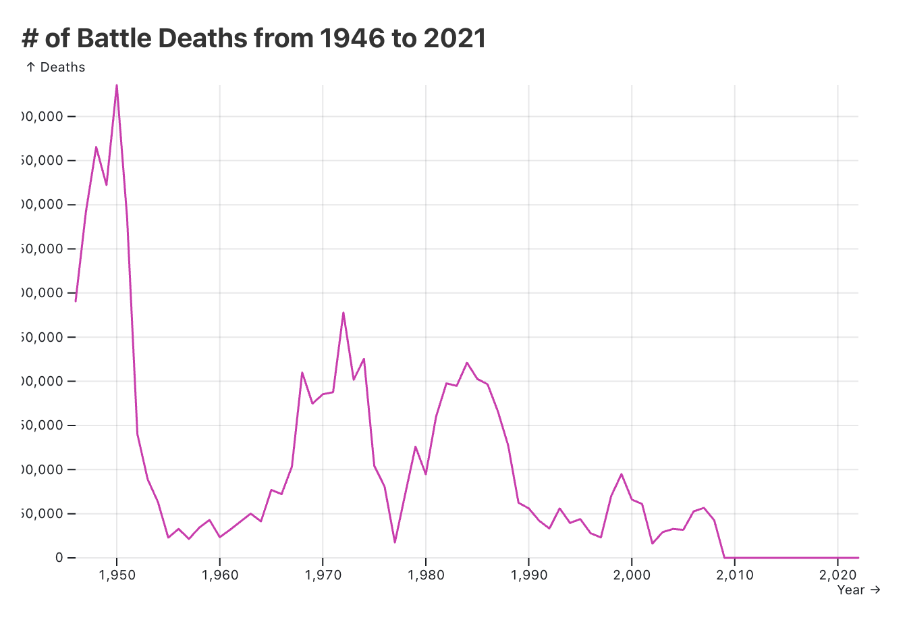
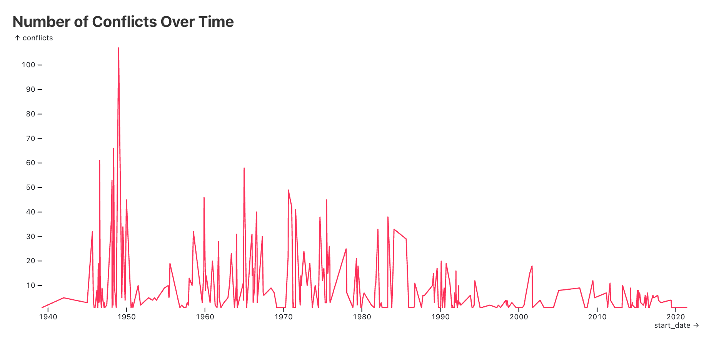

Quotes Inspiring Project
Lord Wolseley, 1899
"It can be proved to the hilt that scientific development of engines of destruction had tended (a) to make nations hesitate before going to war; (b) to reduce the percentage of losses in war; (c) to shorten the length of campaigns, and thus to reduce to a minimum the sufferings endured by the inhabitants."
Sven Lindqvist, "A History of Bombing"
"The wars that have actually been fought since 1945 have been in general what were called "little wars" in the 19th century, and which today are called, quite misleadingly, "low-intensity conflicts." They have often been waged from the air against people on the ground - but with little success. They have been conducted by developed nations in undeveloped ones."
Project Objective
Lord Wolseley and Sven Lindqvist have alternate opinions on modern wars. Lord Wolseley believes more destructive modern wars not only act as a deterrent but also result in fewer deaths and shorten the length of the conflict. Lindqvist opposes the notion that modern wars are “low-intensity conflicts” and condones them for being primarily waged in less developed nations.
In light of these opposing opinions, my research objective is to analyze trends in conflicts to see if there have been changes from the end of WWII to now.
Specifically, I will be looking at the following factors:
- Length of conflict
- Intensity of conflict
- # of deaths
- Frequency of conflict
- Location trends
Tools Used
- All data cleaning, preprocessing and analysis was done using Python.
- The data visualizations were created using Python and Javascript namely the D3.js and AmChart libraries
- This website was coded in HTML, CSS, and Javascript
The Data
3 datasets were used for this rpoject
- 1. UCDP/PRIO Armed Conflict Dataset: "dataset with information on armed conflict where at least one party is the government of a state in the time period 1946-2022"
- 2. PRIO Battledeaths Dataset: "A dataset on battle deaths (number of soldiers and civilians killed in combat) in state-based armed conflicts for the period 1946–2008"
- 3. UUCDP Battle-Related Deaths Dataset: "dataset with information on the number of battle-related deaths in the conflicts from 1989-2021"
I merged datasets #2 and #3 to obtain fatality data. All analyses on factors other than death were performed using dataset #1.
Length of conflict
The first question I will be looking at is: how has the average length of conflict changed from 1946 to 2022?
Average Length of Conflict from 1946 to 2022
hover over columns to show values
Process
I also parsed through the data in Python to generate a trendline. The bar graph was created using JavaScript (specifially amChart library)
Findings
One of Lord Weas "shorten the length of campaigns" We can see from this tbale that conflict has actually gotten longer. In fact, it appears to be quite steadily increasing.
Instensity of conflict
Wars may have increased in duration since 1946 but have they become more intense?
Note
How "intensity" was measured according to the Uppsala Conflict Data Program:
The intensity variable denotes what level of fighting a state-based conflict or dyad reaches in each specific calendar year. The variable has two categories:
Minor: At least 25 but less than 1000 battle-related deaths in one calendar year.
War: At least 1000 battle-related deaths in one calendar year.
Average Length of Conflict from 1946 to 2022
hover over columns to show values
Process
Findings
We can see from this tbale that conflict has actually gotten longer.
Average Length of Conflict from 1946 to 2022
hover over columns to show values
Process
Findings
We can see from this tbale that conflict has actually gotten longer.
# of Deaths
While war has may have become less intense over time, has the overall battle death count gone down? How has number of deaths in conflict changed from 1946 to 2022?

# of Battle Deaths Every Year from 1946 to 2021
hover over columns to show values
Frequency of Conflict
Conflict has clearly become less deably but has conflict become less frequent?

# of Conflics Started Every Year from 1946 to 2021
Frequency of Conflict by Region
While the global frequency of conflict may have decreased Is this true for every region?